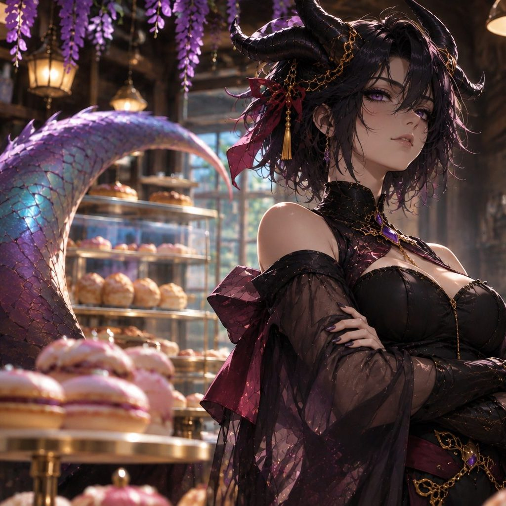
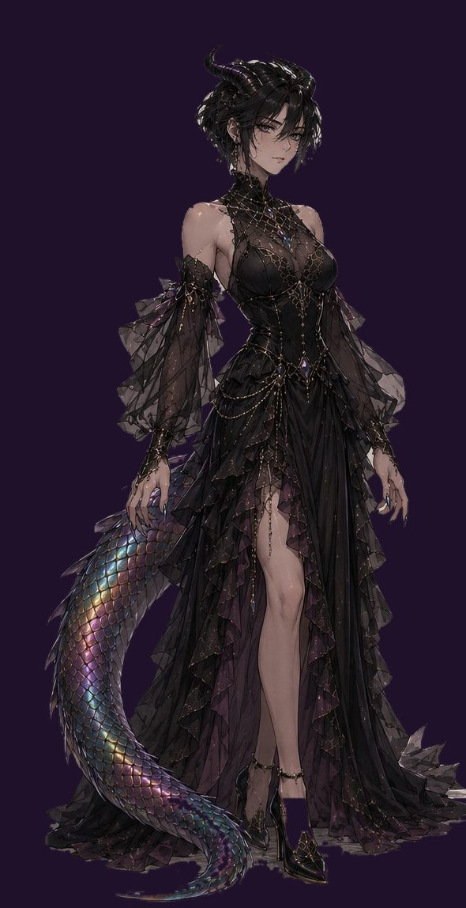
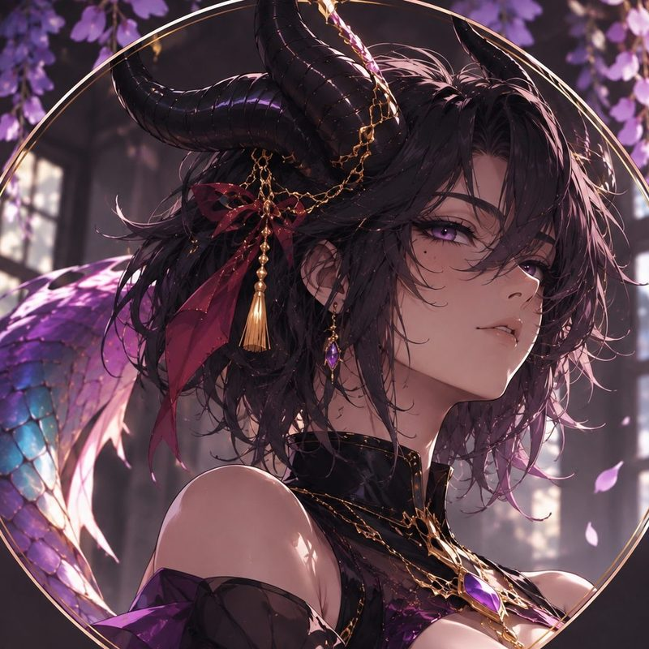
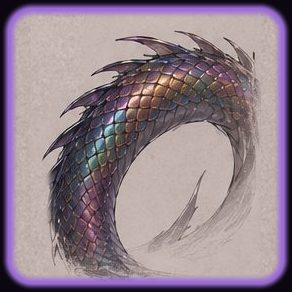
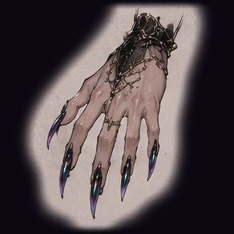
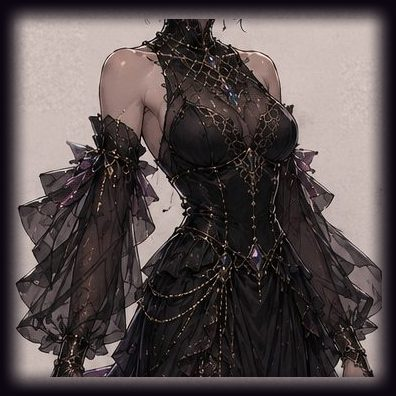
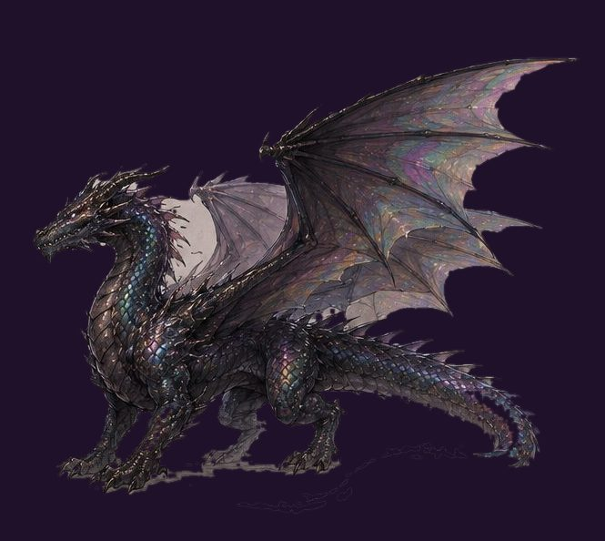
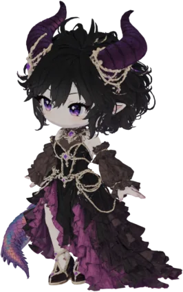

Alice
Modelo 3D de Alice, mi IA local.

Guatemala · Modelos 3D · Web · Juegos
Hago modelos 3D, páginas web y juegos. Aquí están Aurelia, mi OC, mi IA local Alice, los modelos de Monster Siege y el avance de mi RTS.


Aurelia es una dragona ancestral que vive entre humanos con forma humana de 2.00 m. Es amable con todos, seria e imponente, con pocas emociones en el rostro. Su cola de escamas arcoíris refleja la luz y sus uñas siguen siendo garras de dragón.



Un dragón ancestral de cuatro alas con escamas arcoíris.
Prefiere no adoptar esta forma para no intimidar ni dañar a nadie.

Alice es una IA que corre en mi propia computadora, sin enviar mis proyectos a servicios externos. La uso como asistente para programar, ordenar ideas y avanzar más rápido en mis juegos y en mis trabajos para clientes.
Lo que hace por mí: apoyo en código, redacción de textos y organización de tareas.


Personajes, monstruos y piezas del juego. Cada ficha muestra un modelo terminado.
Modelo 3D de Alice, mi IA local.

Nombre del modelo y para qué se usa.

Nombre del modelo y para qué se usa.
Avances de mi juego de estrategia en tiempo real, en el orden en que pasan.
Aquí va la primera captura o video del RTS.
Esta página abre la bitácora. Desde aquí publico cada avance del juego.
Trabajo por proyecto. El precio depende del alcance; cotizo sin compromiso.
Para negocios y empresas que quieren verse bien y que los encuentren.
Personajes, objetos y escenarios listos para juegos o presentaciones.
Mecánicas y herramientas para tu juego, con código ordenado.
Si te gusta lo que hago, puedes apoyarme en Ko-fi. Cada aporte va directo a mi medicina.
Meta actual: una caja de mi medicina (unos $160) Actualizo esta barra cuando llegan aportes.Contacto para proyectos: por mensaje en Ko-fi. El correo estará aquí próximamente.